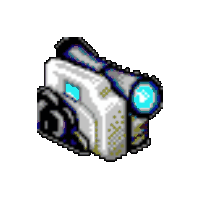
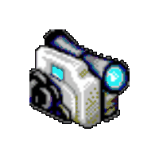

about me.


hi! My name is Paris Norvell (he/him), i'm 22 years old based out of Kansas City, Missouri and currently attending school at the University of Central Missouri studying digital media production with an emphasis in audio. my time is mostly split between music and audio production, video editing, designing for media, web development, and connecting and working with all types of people. along with my studies at university, im also employed with PBS channel KMOS-TV where i make podcasts, mini-documentaries, and engineer live sound. media and content creation has been my passion for as long as i can remember and i can’t imagine myself doing much else with my time. if you’re looking for someone to help you on your next project or you’re interested in my work i’d love to talk with you so please don’t hesitate to reach out!